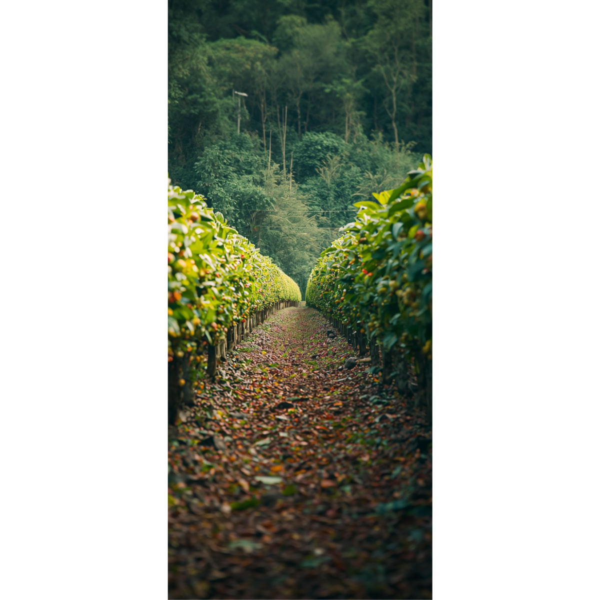

Pereira
Llegada a Pereira
La llegada del café a Pereira debe entenderse como un proceso histórico gradual y no como un hecho aislado. La formación de la región estuvo marcada por la colonización antioqueña, un movimiento de poblamiento que transformó el territorio del Viejo Caldas y que llevó a los colonos a organizar fincas campesinas en las que se cultivaban productos básicos para la subsistencia familiar. Banrepcultural explica que esas fincas producían maíz, fríjol, yuca, plátano, arracacha y otros alimentos, y que hacia 1880 comenzó a cultivarse café en ellas, de manera que el grano se integró progresivamente a una economía rural que ya existía antes de su expansión más fuerte.
Ese proceso no puede verse solo desde la agricultura, porque también cambió el poblamiento y la organización del territorio. Zuluaga, en Historia extensa de Pereira, presenta la historia de la ciudad como un recorrido por fenómenos políticos, sociales y económicos, y recuerda que el territorio de Pereira fue ocupado por inmigrantes de gran diversidad cultural, entre ellos los colonos provenientes de Antioquia que fundaron la aldea de Villa de Robledo. Eso significa que la llegada del café se relaciona con la manera en que se fue formando la ciudad, no solamente con la siembra del grano.
Desde esa perspectiva, el café fue ganando espacio en la región porque se adaptó bien a las condiciones de montaña y porque encontró una base social ya instalada en las fincas campesinas. Banrepcultural señala además que los colonos llevaron consigo semillas de café junto con las de maíz y fríjol, y que la construcción de caminos facilitó el comercio y la difusión del cultivo en el Viejo Caldas. Esto ayuda a explicar por qué Pereira terminó vinculándose tan estrechamente con la caficultura: el café no llegó como un producto aislado, sino como parte de una economía de colonización, movilidad y apertura de rutas.
Ya en el cambio de siglo y durante las primeras décadas del XX, el café pasó de ser un cultivo rural a convertirse en un factor decisivo para la transformación de Pereira. El artículo Café y ciudad: El despegue urbano de Pereira de Martínez Botero y Mejía Cubillos se enfoca justamente en ese vínculo entre café y crecimiento urbano, mientras que el estudio de Osorio Velásquez y Montoya Ferrer analiza la expansión urbana y la transformación arquitectónica de Pereira entre 1910 y 1930, un periodo que las fuentes identifican como uno de los más importantes en el crecimiento de la ciudad.
Eso permite entender que el café no solo cambió el paisaje rural, sino también la ciudad. A medida que la economía cafetera se fortalecía, Pereira fue conectándose con nuevas dinámicas de comercio, circulación de productos, expansión de servicios y transformación del espacio urbano. El crecimiento urbano no fue un efecto secundario menor, sino una consecuencia directa del peso que fue adquiriendo la caficultura en la región.
En síntesis, la llegada del café a Pereira debe explicarse como un proceso largo: primero la colonización antioqueña y el poblamiento del territorio, luego la incorporación progresiva del café a las fincas campesinas, y más adelante su impacto en la economía y el crecimiento urbano. Visto así, Pereira no solo recibió el café; también se transformó con él, hasta convertirse en una ciudad estrechamente ligada a la cultura cafetera del occidente colombiano.